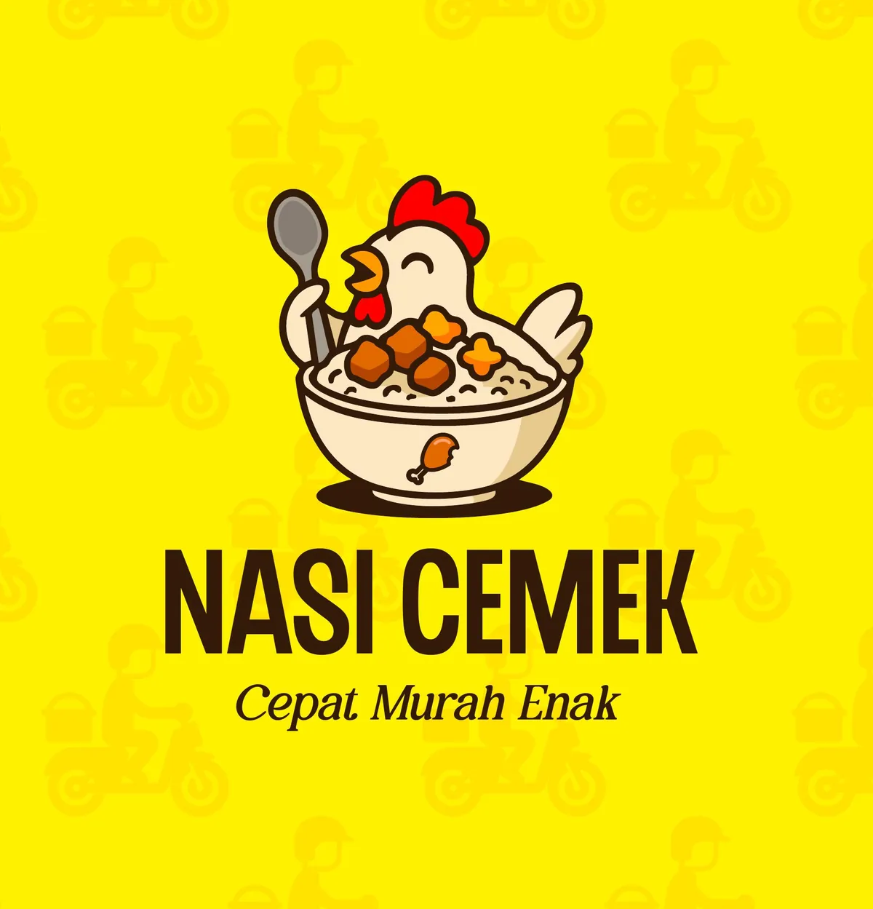

Brand identity and mascot logo design for Nasi Cemek, a local Indonesian food brand. The mascot character was designed to be playful and memorable, reflecting the warmth of Indonesian street food culture. Tagline: Cepat Murah Enak.
Font Used
Chedros Regular (Primary) · Balivia (Secondary) · Helvetica (Sub Text)
Color Scheme